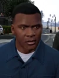
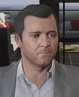
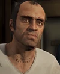
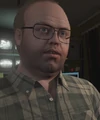
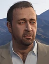
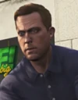
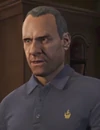

Hogy mi is az a GTA?
A Grand Theft Autó játéksorozatot gondolom senkinek sem kell bemutatnom, ez ennek legfrisebb kiadása. A játék lényege, hogy Los Santos utcáin száguldozva, 3 karakterrel, egy történet részesei legyünk. Mára már ikonikussá váltak a mondatai (játékoskörökben, ilyen pl a Kriminális Mesterelme kihívás), hála Trevornak, illetve a jól felépített online folytatásoknak. Habár még 2013-ban jelent meg, mai napig az egyik legnépszerűbb cím, és nem véletlen. Sorozatban 4 szer elnyerte az év játéka címet, emellett az Legjobb játék címet, a Legjobb story címet, az év Streamelt játéka címet, és még sok mást is elért. Ez a ma létező legsikeresebb játék, ezt bevételei is igazolják, az elmúlt 5 évben, mindíg megdöntötte az előző éves csúcsot a bevétele. Eddig jelenleg 6 milliárd amerikai dollárt keresett vele a játékot forgalmazó Take Two, és a Rockstar Games.
Egy évvel a Story mód megjelenése után bejelentették a GTA: Online-t, mely igazi forradalmat hozott a játékba. Kezdetben, néhány küldetést tudtunk elvégezni társainkkal, de ma már versenyezni, soha nem látott hadi járműveket és ikonikus filmes kocsikat vezetni, szegetet rabolni, kaszinózni, gyakorlatilag bármit tudunk csinálni. Mára a játék teljesen megváltozott, hihetetlennek tűnő dolgokat láttunk megvalósulni benne. Halálos irambanon is túltevő filmes jeleneteket játszhatunk végig mi magunk, és a lehető legkülönfélébb módokon szórakozhatunk. A GTA példát muatott a konkurenciáknak minden szempontból, az egyik legjobb Open World játék. Az autóvezetési élmény nem marad el sokkal, a külön erre szánt címektől sem. Tavaly, a játék térképe bővült egy szigettel, és vadonatúj küldetéseket hoztak be. Mára már sajnos egyre inkább hanyatlik, mert már nincs új dolog benne. Maga a játék, közel 1500 járművet tartalmaz, ebből 700 autó.
Miért játszak evvel a játékkal?
- Kikapcsol. Megtehetsz bármit, bárhol, bárkivel, bárhogy. Csak a képzeleted szab határt
- Nincs semmi féle illúzióromboló pályahatár limitáció, ha eléred a pálya szélét, akkor nem esel le, nincs fal, mert generálódik tovább a tenger. A szabad játékot nem befolyásolja az, hogy történet hol tart, szabadon megtehetsz akármit.
- Szórakozásra a haverokkal tökéletes, nincs jobb egy Criminal Mastermind Challange-nél, ilyenkor van, hogy pezsgőt bont valaki.
Karakterek
Főszereplők
| Kép | Történet |
|---|---|
|  |
Franklin Clinton
Franklin Clinton egy fiatal afroamerikai ember, hogy ildomos nagy bűnöző legyen Los Santosban, egy olyan világban, ahol az utcai bandák fénykora már lecsengett. Fanklin abba akarja hagyni, de nem könnyű mert a régi haverok visszahúzzák. Először Simeon Yetarian dolgozik aki egy örmény autókereskedő, majd hamarosan Franklin találkozik Michaellel egy visszavonult bankrablóval, aki kialakít az ifjúval egy közeli apa-fiú-kapcsolatot. Nem sokkal ezután Michael barátja, Trevor segédkezik nekik, hogy elérjék a céljukat, mégpedig kirabolják a város legnagyobb üzleteit. Szinkronhangja Shawn Fonteno |
|  |
Michael De Santa
Michael De Santa egy nyugalmazott bankrabló, aki, miután egy alkut kötött az FIB-vel, elköltözött a családjával együtt Los Santosba, ahol élnek egy szép kastélyban. Sajnos, a felesége, Amanda, többször is költi a pénzét. Ez okozza, hogy visszatérjen a bűnügyi életbe még egyszer, ezúttal segítségére lesz a régi partnere, Trevor Philips és egy energikus bűnöző, Franklin. Szinkronhangja Ned Luke |
|  |
Trevor Philips
Trevor Philips egy mentálisan instabil paraszt és nyugdíjas bankrabló az akkori partnere, Michael mellett. Korábban katonai pilóta volt, ám Trevor Los Santosba költözött, ahol megalapította a "Trevor Phillips Enterpriseset", amely elsősorban fegyverekkel és kábítószerekkel foglalkozik. Legjobb barátja Ron. Most a Los Santos-i sivatagban él, Trevor oldalán van a régi bajtársa, Michael és a fiatal Franklin, akikkel összefog, hogy kirabolják a legnagyobb vállalkozásokat a városban. Szinkronhangja Steven Ogg |
Központi karakterek
| Kép | Történet |
|---|---|
|  |
Lester Crest
Lester Crest az egyik régi barátja Michaelnek, és a rablás mögött álló elme, amit Michael, Franklin és Trevor végez. Ő is küldetéseket bíz Franklinre. |
|  |
Prologue - Lamar Down
Dave Norton egy FIB ügynök és jó barátja Michaelnek. Védelmet szervezett meg Michael tanújának és Bradnek álcázva ír Trevornak üzeneteket. |
Lamar Davis
Lamar Davis Franklin egyik legjobb barátja. Őrültként mutatják be a srácot, aki Franklinnel ellentétes ideállal rendelkezik, és megpróbálja visszatartani Franklin hogy ne hagyja ott a Grove Street Family-t. |
|
|  |
Steve Haines
Steve Haines korrupt ügynök aki az FIB-nél dolgozik. Dave Norton feletteseként, Haines a pozícióját arra használja, hogy Michael, Franklin és Trevor aláássa az IAA-t . |
|  |
Devin Weston
Devin Weston egy milliárdos üzletember és sok érdekeltséggel rendelkezik San Andreasban, köztük a Merryweather Securityvel. Steve Haines a játék során bemutatja, majd később Michael, Franklin és Trevor elkezd nála dolgozni, ámde gyorsan szembefordulnak vele a főhősök, hiszen Weston nem fizeti ki a triót a beígért összeggel. |
Galléria
Itt láthatóak a játékról a képek, videók, és egyebek